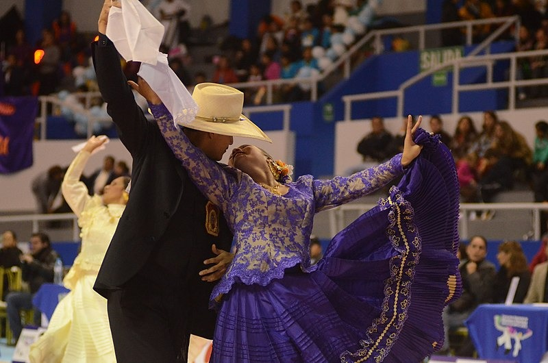
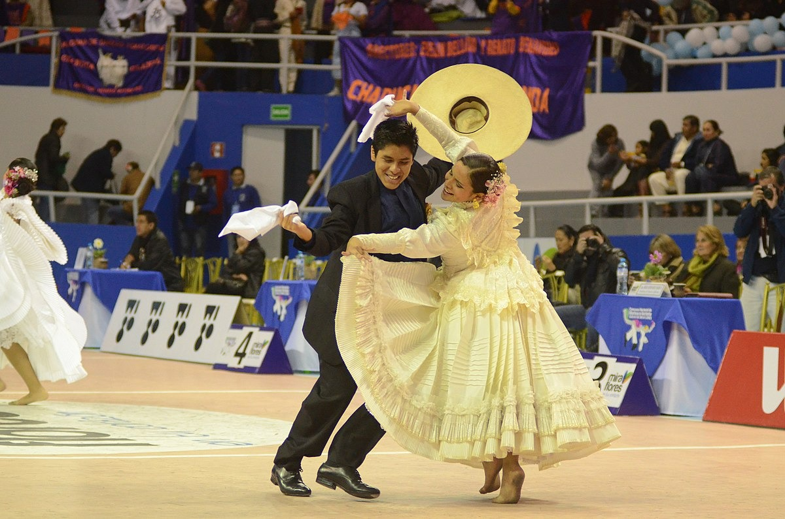
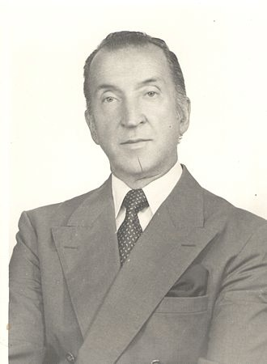
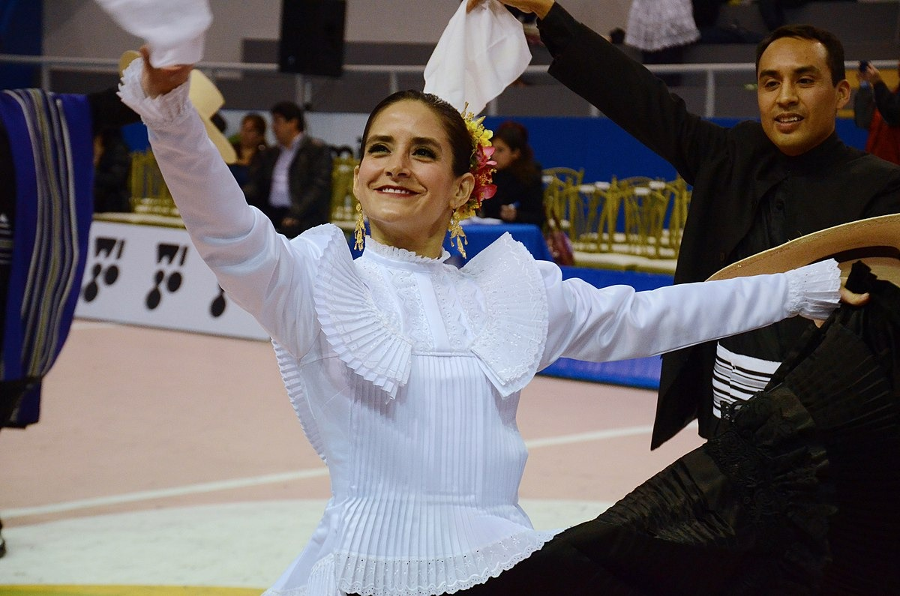
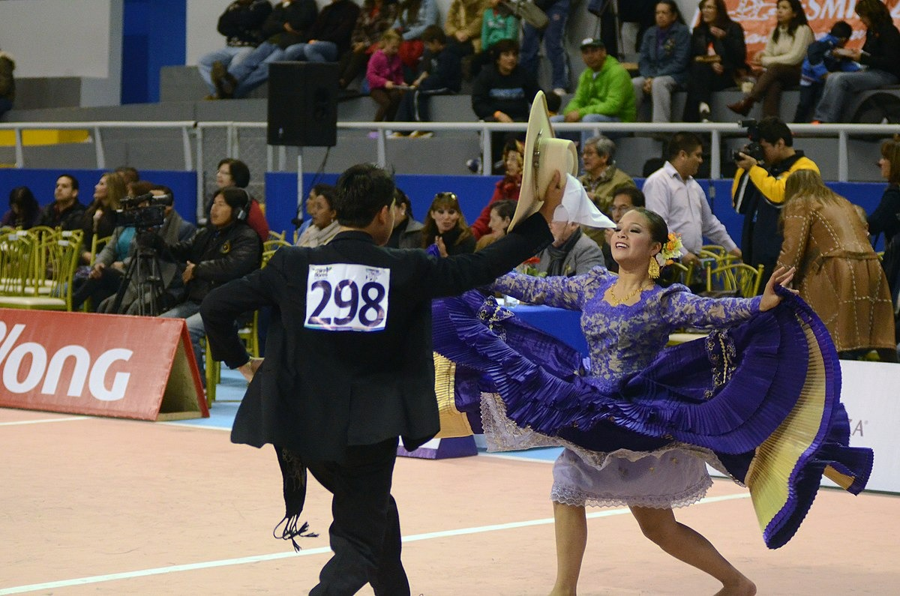

Marinera Norteña

La marinera norteña es una expresión cultural peruana. Esta danza es una variación de la propia marinera, considerada como patrimonio cultural de la humanidad. Es manifestada en Trujillo, ciudad denominada como la Capital Nacional de Marinera y origen de este estilo en el siglo XIX, pues es la principal sede del Concurso Nacional de Marinera que convoca multitudes entre concursantes, personalidades, turistas y espectadores nacionales.
Fundador de la Marinera
La marinera es producto del mestizaje hispano-indígena-africano y debe su nombre a Abelardo Gamarra Rondó, famoso escritor peruano, quien la bautizó así tras la guerra con Chile en 1879, en honor a la Marina de Guerra del Perú y las hazañas de Miguel Grau. Desde entonces se considera a este baile como un símbolo nacional. Su origen se remonta a fines del siglo XVIII, durante el esplendor del virreinato, evolucionando con el paso del tiempo y adquiriendo diversas variantes en las regiones y departamentos del Perú, así como en países vecinos.

Aporte de Guillermo Ganoza a la Marinera Norteña
En 1960 Guillermo Ganoza Vargas creó un concurso de marinera (además de una tómbola) que le permitió recaudar fondos para resolver la crisis organizacional y promover el desarrollo del club.

Vestimenta
| Mujeres | Hombres |
|---|---|
| Usan una falda amplia con pliegues, pies descalzos y el cabello recogido o trenzado. | Usan un terno de color blanco o color oscuro, una camisa una faja un poncho de lino y un sombrero |
|
 |
 |
Enlaces de Interés
 Facebook
Facebook
 YouTube
YouTube
 Instagram
Instagram
 TikTok
TikTok
By: Adolfo Herrera - Lima, Perú 2026